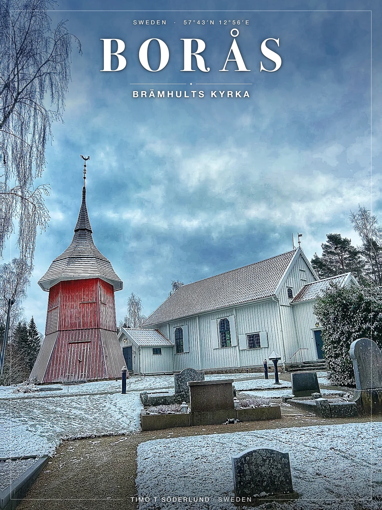

Brämhults kyrka
Medieval Timber Church (c. 1479) · Borås, Sweden
English
Dusted with crisp Nordic winter frost, Brämhults kyrka stands beside its traditional red wooden bell tower in Borås, Sweden. Built in the late 15th century (c. 1479), it is one of the few preserved medieval timber churches in Västergötland. Photographed by Timo T Söderlund for Borås Poster Project 2026, capturing quiet winter history in Boras, Sweden.
Svenska
Pudrad av krispig nordisk vinterfrost står Brämhults medeltida träkyrka sida vid sida med sin röda klockstapel i Borås. Kyrkan har sitt ursprung i 1400-talets senare del, med årtalet 1479 dokumenterat i ett historiskt pergamentbrev. Den är en av Västergötlands få bevarade medeltida timmerkyrkor. Fotograferad av Timo T. Söderlund för Borås Poster Project 2026.
Photographer & Edition: Timo T Söderlund · Borås, Sweden (2026)